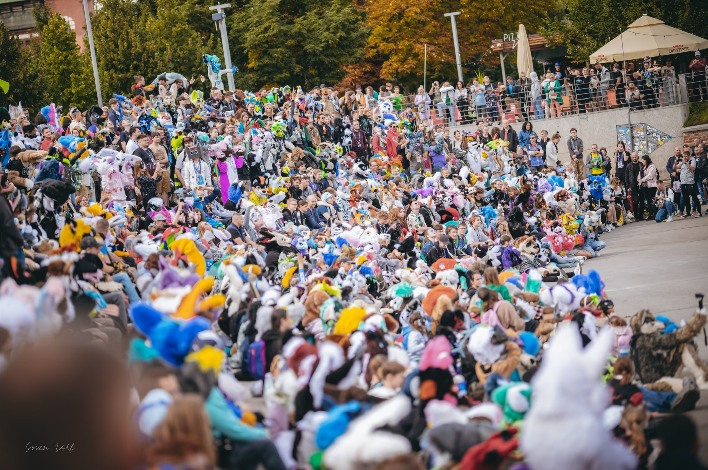
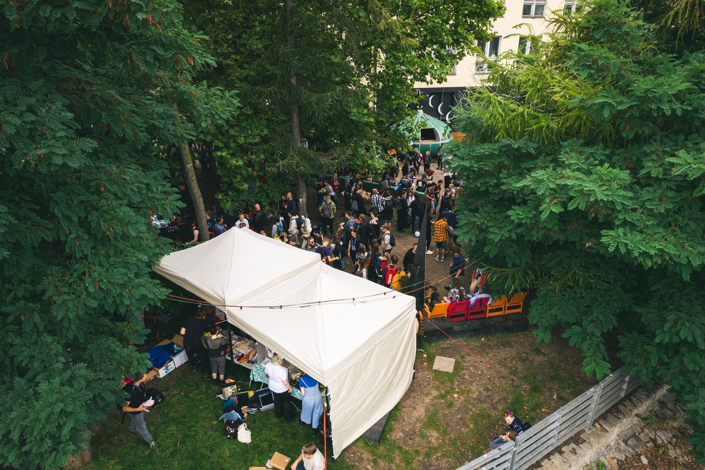
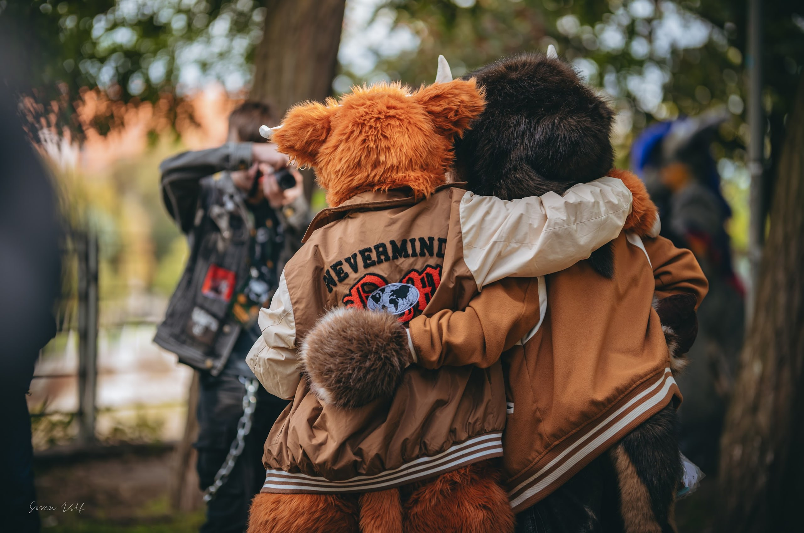
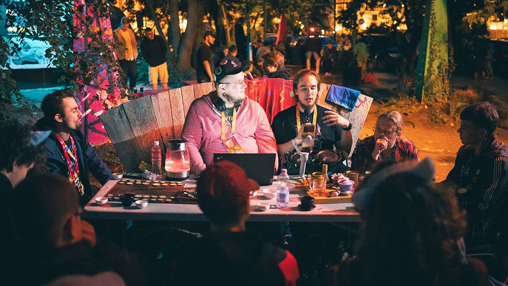
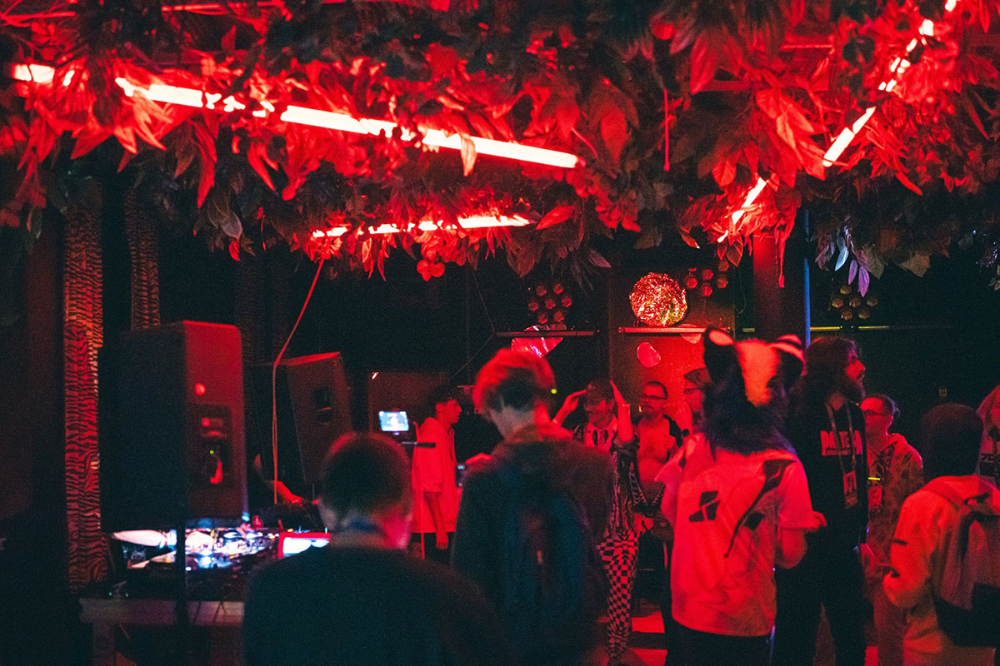
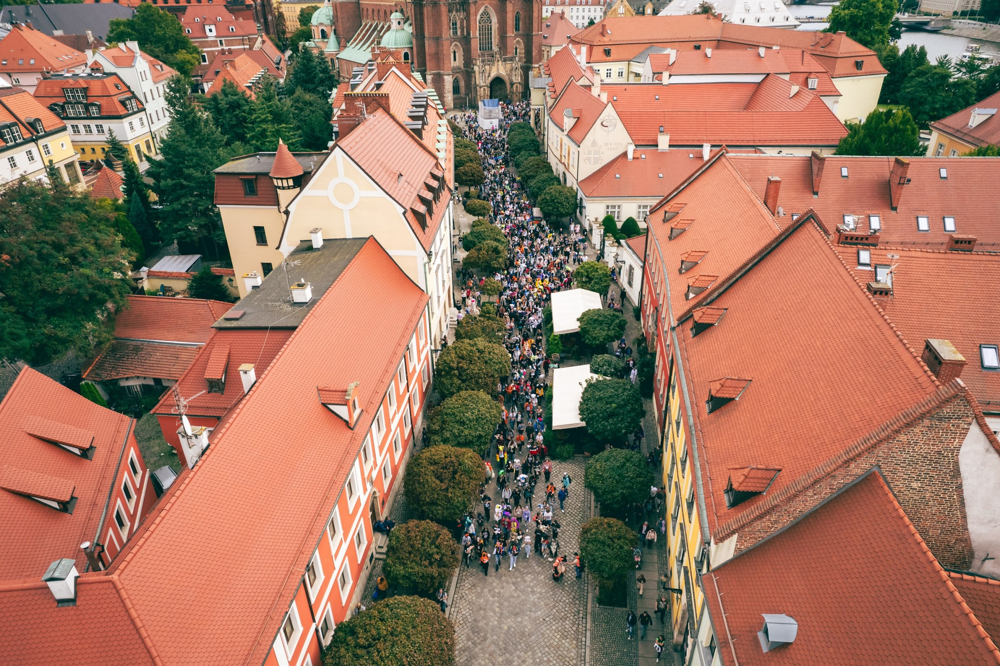
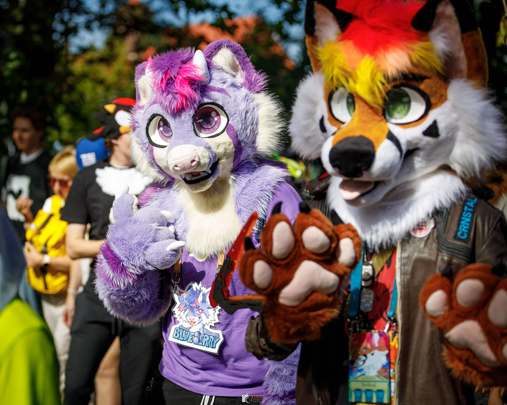

19.09.2026
Czasoprzestrzeń, Tramwajowa 1 - 3, Wrocław
19.09.2026
Czasoprzestrzeń, Tramwajowa 1 - 3, Wrocław







Wroof to jednodniowy konwent społeczności futrzaków połączony z Wrocławskim Furwalkiem, podczas którego osoby z całego kraju spotykają się by spędzać razem czas, bawić się i dzielić wiedzą.
W programie znajdziesz panele, warsztaty, stoiska lokalnych artystów, a przede wszystkim — legendarny fursuitwalk, czyli wielkie, kolorowe przejście przez Wrocław!
W tym roku gości nas Czasoprzestrzeń - zlokalizowana w uwielbianej przez Wrocławian zielonej części miasta, w bezpośredniej okolicy Hali Stulecia i Zoo.
Jak co roku, możecie spodziewać się całego dnia atrakcji! W programie
znajdziecie warsztaty o fursuitach,
prelekcje związane ze społecznością oraz na inne tematy, koncerty podczas wieczornej imprezy,
strefy czillu, naturalnie
fursuitwalka oraz wiele więcej!
Dokładny rozkład jazdy poznacie bliżej wydarzenia!
Lista wystawców zostanie ogłoszona już niedługo!
Sprawdzajcie nasze social media, by być na bieżąco.
Sprzedaż biletów rozpocznie się niedługo
Sprawdzajcie nasze social media, by być na bieżąco.
Masz pytania? Chcesz nawiązać współpracę? Odezwij się do nas!